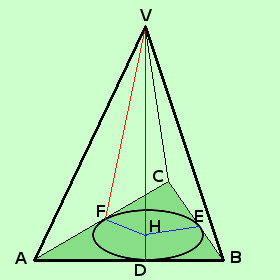

|
 Dimostriamo che le apoteme VD, VE e VF della piramide retta a destra sono tra loro congruenti IPOTESI: VABC piramide retta cioe' VHD, VHE e VHF angoli retti e HD, HE ed HF raggi del cerchio TESI: VD = VE = VF Considero i triangoli VHD, VHE e VHF essi hanno HD = HE = HF perche' raggi VH in comune VHD^= VHE^= VHF^perche' angoli retti Quindi avendo due lati e l'angolo compreso congruenti i tre triangoli sono congruenti per il primo criterio di congruenza dei triangoli e di conseguenza avremo che anche VD, VE e VF sono congruenti; come volevamo Potevamo anche usare un criterio di congruenza sui triangoli rettangoli Abbiamo fatto la dimostrazione per una piramide retta triangolare; possiamo estenderla tranquillamente a piramidi rette quadrangolari, pentagonali, esagonali,... cioe' a tutte le piramidi rette |